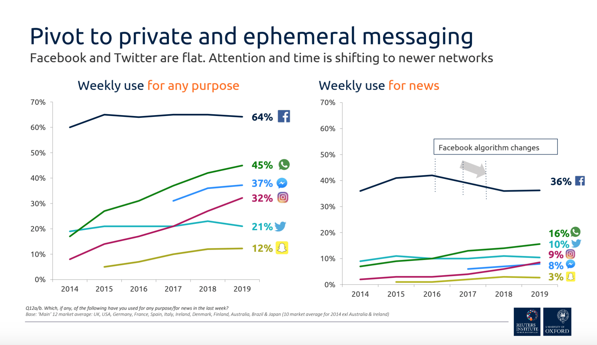

Benvenuto nel mondo della Filter Bubble
Scopri come i contenuti che consumiamo online sono influenzati dagli algoritmi e cosa significa questo per la nostra visione del mondo. Impara come la tecnologia stia cambiando il nostro modo di relazionarci con le informazioni e le persone, senza che ne siamo completamente consapevoli.
Scopri di piùCos'è la Filter Bubble?
La Filter Bubble è un concetto introdotto dal giornalista Eli Pariser nel 2011 per descrivere il fenomeno in cui le piattaforme online, come i social media e i motori di ricerca, personalizzano i contenuti che ci vengono mostrati in base alle nostre preferenze, alle nostre interazioni passate e ai nostri comportamenti online.
Questa personalizzazione ha l'effetto di crearci una "bolla" informativa che ci isola, mostrandoci solo contenuti che ci confermano le nostre opinioni, senza mai sfidarci con idee o prospettive diverse. Questo può ridurre la nostra comprensione della realtà e contribuire a un atteggiamento sempre più polarizzato nei confronti degli altri.
Perché è pericolosa? Sebbene l'algoritmo che personalizza i contenuti possa sembrare positivo, in realtà ci priva di una visione completa e variegata del mondo, rendendoci vulnerabili alla manipolazione e alla disinformazione.
Le Conseguenze Sociali della Filter Bubble
Le conseguenze della Filter Bubble non sono limitate solo alla nostra esperienza online. Esse hanno un impatto significativo sulla società e sulle nostre interazioni quotidiane, contribuendo a creare divisioni sociali e politiche. Ecco alcune delle principali conseguenze:
- Polarizzazione ideologica: Le persone tendono a rimanere isolate in bolle ideologiche che rinforzano le proprie credenze, portando a un allontanamento tra gruppi con visioni politiche o culturali diverse.
- Conflitti sociali: La percezione errata della realtà, alimentata da informazioni distorte o unilaterali, può alimentare conflitti e divisioni tra diverse comunità, creando incomprensioni e odio tra gruppi sociali.
- Diffusione di disinformazione: Le bolle informative favoriscono la proliferazione di fake news e teorie del complotto, poiché gli algoritmi spingono contenuti che attirano l'attenzione e spesso sono sensazionalisti o parziali.
- Erosione della democrazia: Le persone sono meno inclini a prendere decisioni politiche informate, poiché sono esposte solo a una visione distorta della realtà. Questo indebolisce la capacità di fare scelte basate su una comprensione completa e obiettiva degli eventi.
- Manipolazione delle scelte personali: La Filter Bubble può influenzare le nostre decisioni d'acquisto, le opinioni politiche e anche le relazioni sociali. I contenuti che ci vengono proposti sono spesso progettati per manipolare le nostre emozioni e farci compiere scelte che favoriscono determinati interessi.
Come Rompere la Filter Bubble
Esistono diversi modi per contrastare gli effetti negativi della Filter Bubble. Ecco alcuni suggerimenti per liberarsi da questa "bolla" informativa e accedere a una visione più ampia e diversificata del mondo:
- Cerca punti di vista diversi: Esplora contenuti che sfidano le tue opinioni. Iscriviti a canali e segui account che rappresentano visioni politiche, culturali o religiose diverse dalle tue.
- Segui fonti varie: Informati da più siti e canali, compresi quelli che non condividono le tue opinioni. Leggi giornali, ascolta podcast e segui social media che ti espongono a contenuti diversificati.
- Rifletti criticamente: Verifica sempre le informazioni prima di condividerle. Utilizza strumenti per la verifica dei fatti e cerca fonti affidabili per confermare le notizie che leggi online.
- Utilizza strumenti di trasparenza: Approfondisci come funzionano gli algoritmi che personalizzano i contenuti e chiedi più trasparenza alle piattaforme online. Esplora anche strumenti che riducono l'influenza degli algoritmi, come estensioni del browser che bloccano contenuti personalizzati.
- Educazione digitale: Impara a riconoscere la disinformazione e gli algoritmi di personalizzazione. Promuovi l'alfabetizzazione mediatica per comprendere meglio come i contenuti vengano manipolati per attrarre la tua attenzione.
Statistiche sull'impatto globale
Secondo diversi studi, la Filter Bubble ha un impatto significativo sulla percezione della realtà a livello globale. Ecco alcune statistiche che evidenziano la diffusione di questo fenomeno in diverse regioni:
Il grafico mostra la percentuale di utenti influenzati dalla Filter Bubble in base a recenti studi globali. È evidente che le percentuali sono più alte nelle regioni con maggiore accesso ai social media.
Metti alla prova le tue conoscenze!
Ora che hai imparato di più sulla Filter Bubble, è il momento di testare le tue conoscenze con un quiz! Rispondi alle domande per vedere quanto ne sai davvero!
Contattaci
Hai domande o desideri saperne di più su come proteggerti dalla Filter Bubble? Contattaci e saremo felici di aiutarti!